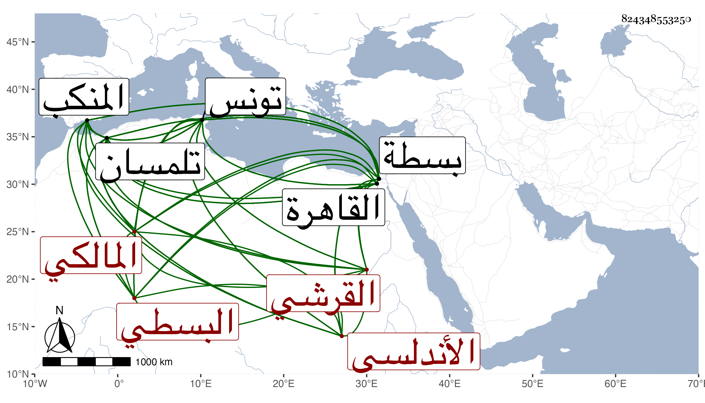

0902Sakhawi.DawLamic.ITO20230111-ara1.EIS1600.824348553250
Biography ID: 824348553250
34
علي بن محمد بن محمد بن علي أبو الحسن القرشي الأندلسي البسطي نسبة لبسطة بفتح الموحدة ثم مهملة مدينة من جزيرة الأندلس المالكي ويعرف بالقلصاوي بفتح القاف وسكون اللام ثم مهملة . ولد قبل سنة خمس عشرة وثمانمائة في مدينة بسطة وقرأ بها القرآن لورش من قراءة نافع على الفقيه عزيز بزايين معجمتين مكبر ثم بحث على محمد القسطرلي بضم القاف وإسكان السين وضم الطاء وإسكان الراء المهملات ثم لام في الحساب وقرأ على الفقيه جعفر فيه وفي الفرائض والفقه وعلى الفقيه أبي بكر البياز بفتح الموحدة وتشديد التحتانية وآخره زاي في العربية ومنظومة ابن بري في قراءة نافع وعلى الأستاذ محمد بن محمد البياني بفتح الموحدة وتشديد التحتانية وآخره نون الفقه والنحو وعلى علي القراباقي بفتح القاف والمهملة ثم موحدة وقاف في النحو والفقه وبحث عليه أدب الكاتب لابن قتيبة والفصيح لثعلب وشرحه للخزرجية في العروض ثم رحل إلى مدينة المنكب بفتح النون والكاف ثم موحدة فقرأ على خطيبها أبي عبد الله البجلي في النحو وفي قرية الموز من ضواحي المنكب على أبي حسن العامري في الفقه ثم إلى تلمسان سنة أربعين فوجد أبا الفضل المشدالي هناك فرافقه في الاشتغال فلازم الشيخ أحمد بن زاغو بزاي وغين معجمتين وقاسما العقباني بضم المهملة وسكون القاف ثم موحدة ومحمد بن مرزوق فدرس عليه في التفسير والحديث والفرائض والنحو وعلى العقباني في التفسير والحديث والفقه والأصلين وعلى ابن زاغو في التفسير والحديث والفقه والفرائض والحساب والهندسة والنحو والمعاني والبيان وعلى عيسى بن أمزبان بفتح الهمزة وكسر الميم والزاي المشددة في الفرائض والحساب والمنطق وعلى محمد بن النجار في أصول الفقه والمعاني والبيان وغيرهم وقرأ بعض مستصفى الغزالي على رفيقه أبي الفضل المذكور لما رأى من نبله وتقدمه وفضله وثناء مشايخه عليه ولم يزل إلى أن برع في الفرائض والحساب وصنف في ذلك في تلمسان كتاب التبصرة في الغبار وشرح أرجوزة الشران بفتح الشين المعجمة وتشديد المهملة وآخره نون في الفرائض وأرجوزة التلمساني فيها في مجلدة لطيفة وشرح الحوفي في مجلدة ، ثم رحل من تلمسان في آخر سنة سبع وأربعين فدخل تونس فيها فدرس فيها على قاضي الجماعة محمد بن عقاب بضم المهملة وفتح القاف في التفسير والحديث والفقه وروى عنه كتب شيخه الفقيه أبي عبد الله بن عرفة عنه ثم على قاضي الجماعة بعده أحمد القلشاني أخي عمر قراءة وسماعا في التفسير والفقه وعلى أحمد المنستيري بفتح النون وإسكان المهملة وكسر الفوقانية وسكون التحتانية في النحو والأصلين وصنف في تونس عدة تصانيف منها القانون في الحساب كراسة وشرحه في مجلدة لطيفة والكليات في الفرائض نحو كراسة وشرحها في نحو أربعه كراريس وكشف الجلباب في علم الحساب نحو أربعة كراريس وغير ذلك ، ثم رحل من تونس سنة خمسين فدخل القاهرة وفي التي بعدها حج فيها وعاد وأقام بها فقرأ عليه الناس وكتبوا من مصنفاته وهو مع ذلك يتردد إلى المشايخ ويقرأ في غير الحساب والفرائض لا سيما العقليات وهو رجل صالح . قاله البقاعي وقال إنه أجاز له في سنة اثنتين وخمسين رواية جميع مصنفاته ومروياته وأنه حضر معه عند أبي الفضل المذكور في شرح القطب على الشمسية . قلت وهو ممن سمع على شيخنا مع أبي عبد الله الراعي في سنة اثنتين وخمسين .
